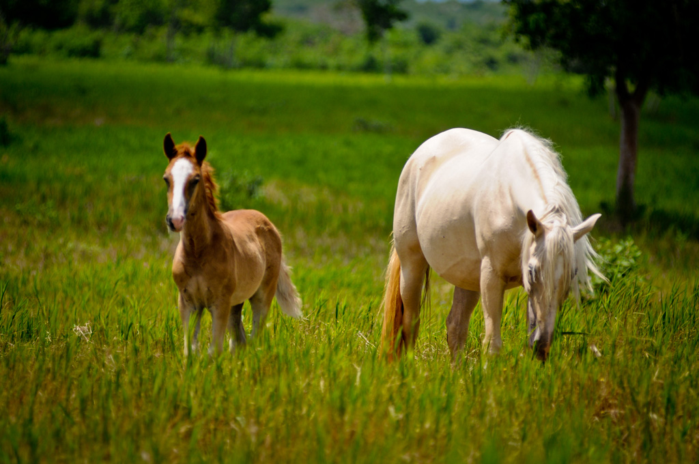

DISFRUTA LOS MEJORES MOMENTOS EN FAMILIA
Vive Cap Cana. Hay un excedente de actividades para llenar sus días cuando visite el destino de la ciudad de Cap Cana. Encienda su sentido de la aventura, disfrute de una caminata activa o relájese cerca del agua. Permítase experimentar una renovada sensación de ser. Visite nuestros spas y disfrute de nuestro paraíso ecológico. Sumérjase en nuestro estilo de vida y abrace sus placeres como propios.

GOLF
PUNTA ESPADA UNA EXPERIENCIA CONGELANTE DE LA MANO DE JACK NICKLAUS
Juegue al golf en Punta Espada, un campo de golf exclusivo de Jack Nicklaus que figura entre los mejores del mundo. Desafío y belleza se entrelazan en este excepcional campo de 18 hoyos par 72, que ha sido sede del Tour de Campeones del PGA Tour.

Disfrute jugando una ronda de golf como solo el legendario Golden Bear Jack Nicklaus podría haberlo imaginado y dado vida. Su característico campo de golf Punta Espada se ve realzado por los contornos naturales de la tierra y el paisaje del Mar Caribe.
Este desafiante campo de par 72 fue clasificado como el campo de golf número uno en el Caribe y México por la revista Golfweek. También apareció en el “Best of the Best Golf Course in the World” o lo mejor de lo mejor en campos de golf global de Robb Report en mayo de 2007. Además, Punta Espada ha tenido el honor de ser anfitrión del Cap Cana Championship, un PGA Champions Tour, en múltiples ocasiones.
La casa club está ubicada en el hoyo 19. Tiene una vista increíble de los hoyos 10 al 18, del campo de práctica y del impresionante Mar Caribe. El Club tiene un área de 3,252 metros cuadrados y cuenta con el restaurante Bella Vista, amplios vestidores y casilleros, una tienda excepcional y un relajante salón para miembros.

LA PESCA
EN EL PUNTO DE PESCA #1. DEL MUNDO CADA TEMPORADA ES TEMPORADA DE PESCA
En 2020, The Billfish Report clasificó la costa este de la República Dominicana como el área número uno de peces de agujas en el mundo. La promesa de marlines azules y blancos, pez vela, wahoo y atún hacen de este destino uno de los favoritos de los pescadores. Marina Cap Cana es una marina de captura y liberación, miembro de la Fundación Billfish. Grandes torneos de pesca se llevan a cabo cada año.

LOS ESTABLOS
EL CENTRO ECUESTRE MÁS COMPLETO DE LA REGION
Los establos es el centro ecuestre de última generación más completo. Incluye una pista cubierta para competencias de paso fino. Dos campos de polo de clase mundial diseñados por el famoso Alejandro Battro. Varias pistas de calentamiento. Dos pistas de salto. Todo en cumplimiento con los estándares internacionales más altos.
Con instalaciones deportivas de primera clase y un personal altamente capacitado, Los Establos organizan eventos deportivos durante todo el año para: fútbol, fútbol playa, lacrosse, fútbol americano de bandera, fútbol americano, Ultimate Frisbee, voleibol, béisbol y sóftbol, atletismo, paintball y hockey de campo.
También están en proceso una clínica veterinaria avanzada, un laboratorio de genética animal, un hipódromo y casinos.

POLO
El prestigioso diseñador de canchas de polo, ingeniero agrónomo Alejandro Battro, diseñó las canchas de polo en Los Establos, Ciudad Ecuestre. Equipados con 60 centímetros de arena pura, estos campos son únicos. Diseñados exclusivamente para esta disciplina, cuentan con canchas de polo, establos especiales para hasta 112 caballos de polo, una amplia pista de entrenamiento y campo de palo y pelota para que los jugadores y caballos entrenen. Si estás buscando aprender este deporte, hay una Escuela de Polo en Los Establos para niños y adultos. “El alto nivel alcanzado en la construcción de estos campos es un resultado nunca obtenido en ningún otro campo del mundo.”

SCAPE PARK
Haga “zipline” o tirolesa a través de Scape Park y disfrute de todos los deportes turísticos y actividades de entretenimiento que pueda cuando visite Cap Cana ciudad destino. Aproximadamente 475 tareas de bosque y 15 km de sendero ecológico.
Disfrute del agua de manantial natural, Hoyo Azul, ubicado al final de un hermoso paseo por la naturaleza. Scape Park promueve y refuerza la preservación de especies endémicas y en peligro de extinción.
Horario: Todos los días de 8:00 am a 5:00 pm.
Visite y nade en el renombrado Hoyo Azul (una laguna de agua subterránea natural o cenote) en Scape Park, o tome un crucero en catamarán por la hermosa costa de Playa Juanillo, donde tendrá la oportunidad de nadar y bucear en las piscinas oceánicas a lo largo del costa.
Scape Park está convenientemente ubicado dentro de Cap Cana, y todos los cruceros en catamarán salen del puerto deportivo o de la playa, a minutos de su ubicación.
Disfrute de las espectaculares maravillas de la naturaleza y de un increíble día en el mar donde el sol, el aire puro y las aguas turquesas serán los mejores compañeros para crear hermosos recuerdos.
Se pueden organizar recorridos privados para cualquiera de las actividades. También ofrecemos el Tour Vive Juanillo que es un tour privado para un grupo familiar de cualquier tamaño que combina el crucero en catamarán y Playa Juanillo u Hoyo Azul.